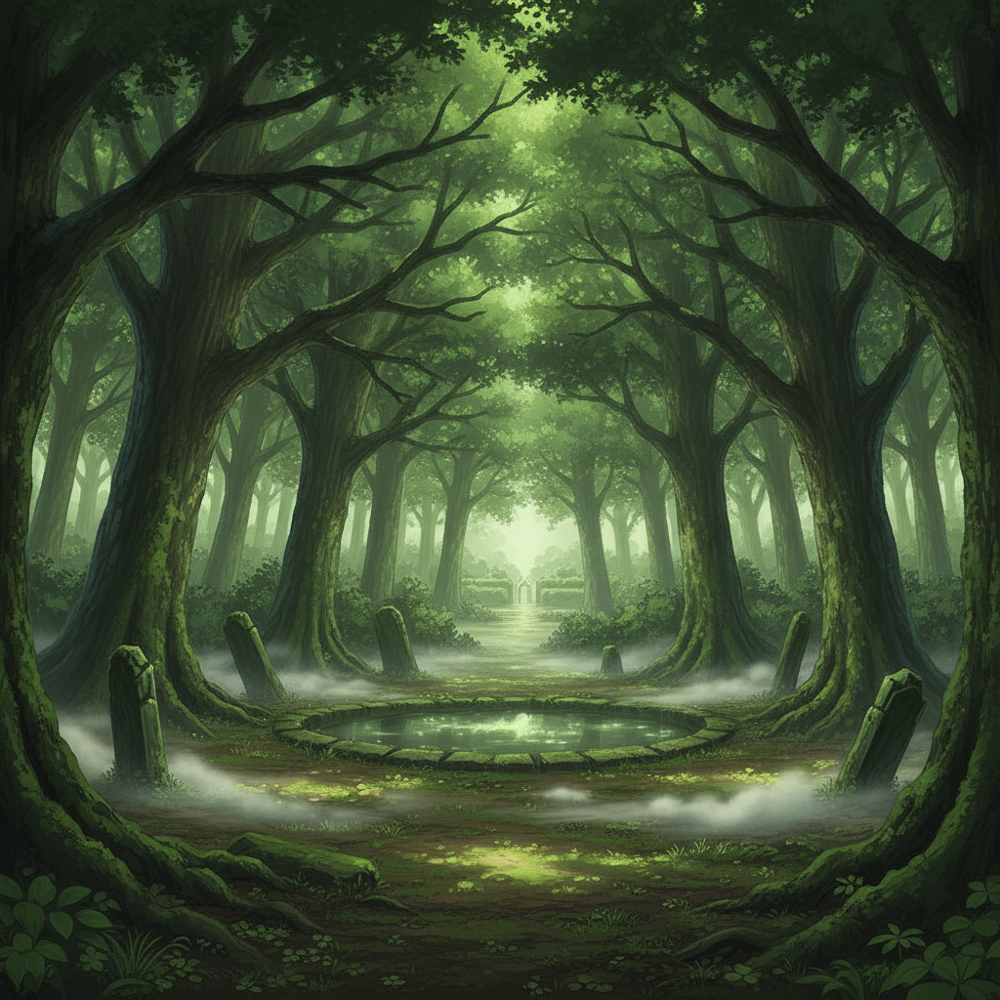
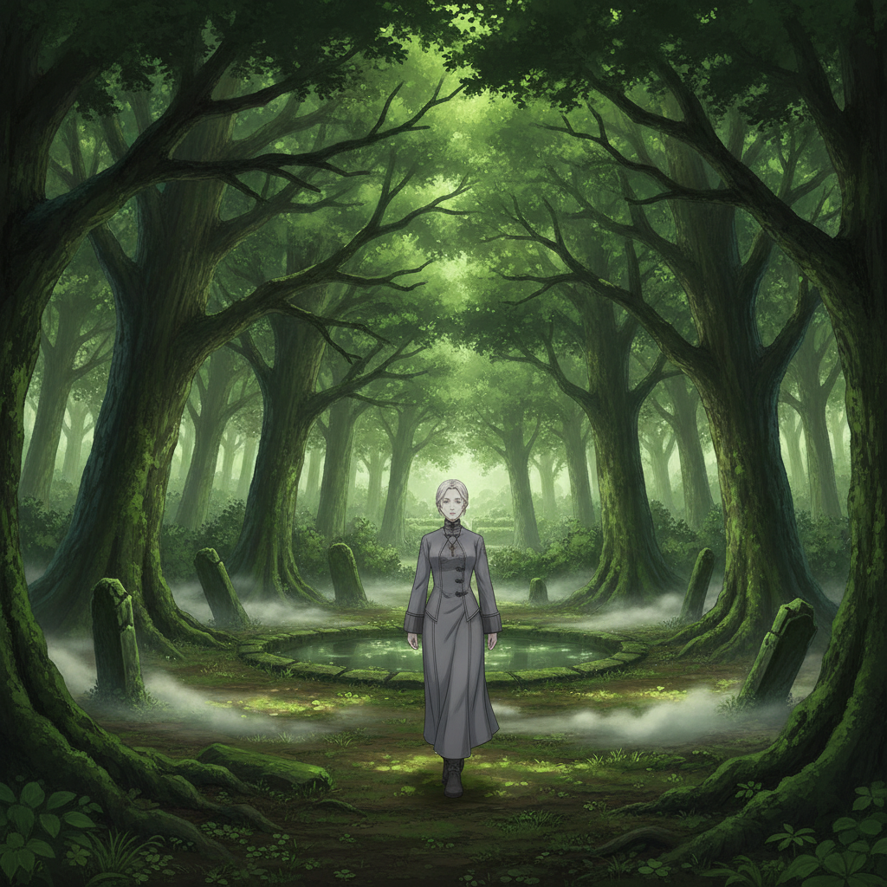
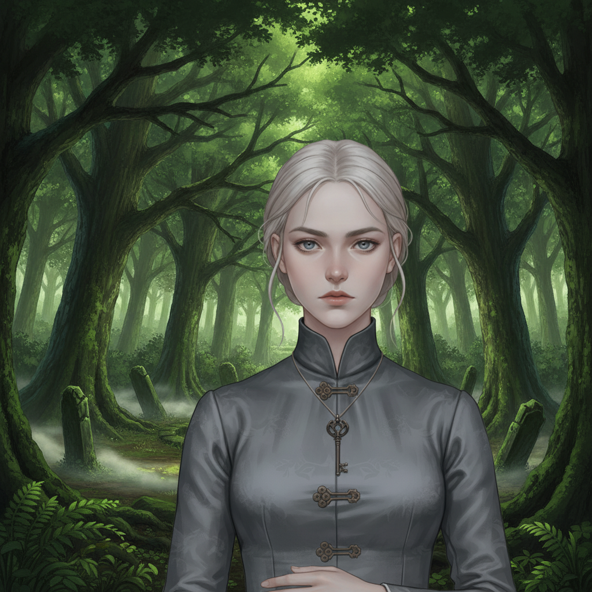

The College Woods, beyond the wards, offer a wild, unpoliced sanctuary. Dappled light filters through the canopy, and the Weave feels closer to the surface here, untamed.

Isolde brings me to a ring of mossed standing stones, ancient and serene.

Isolde Vorn“They teach devotion, Caedon. But beneath it... there is doubt.”